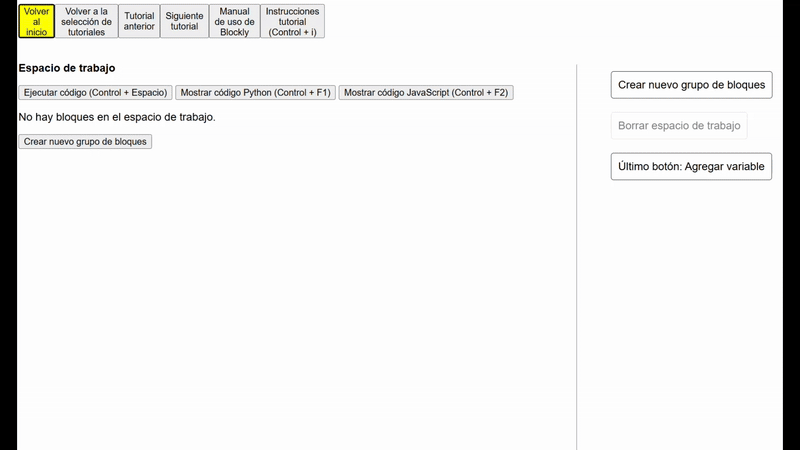
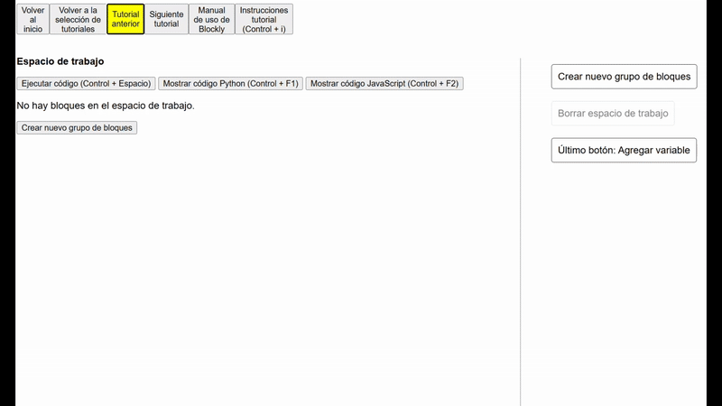
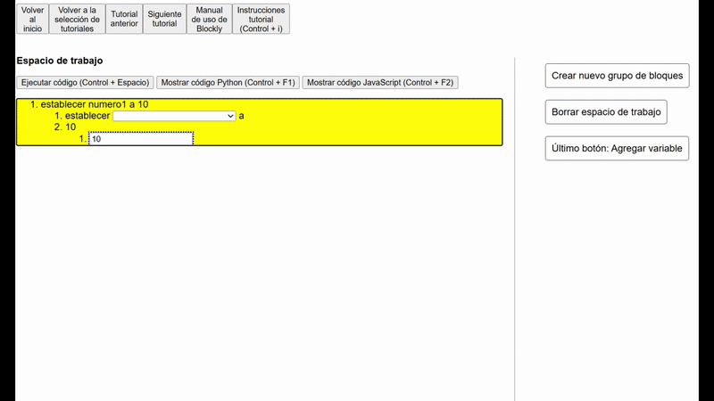
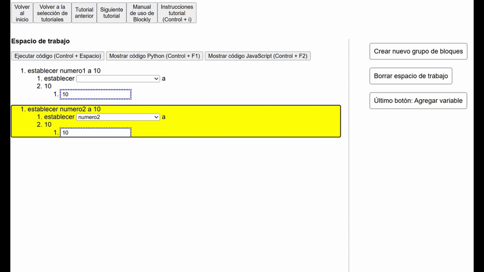
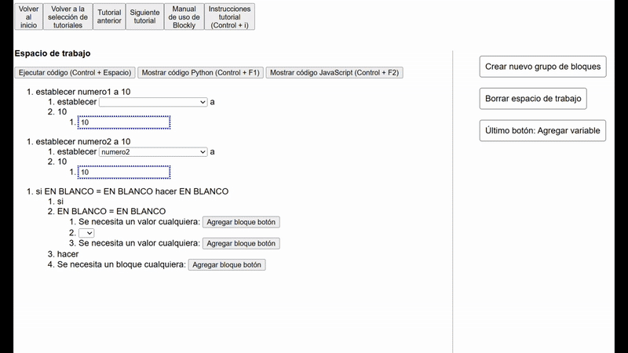
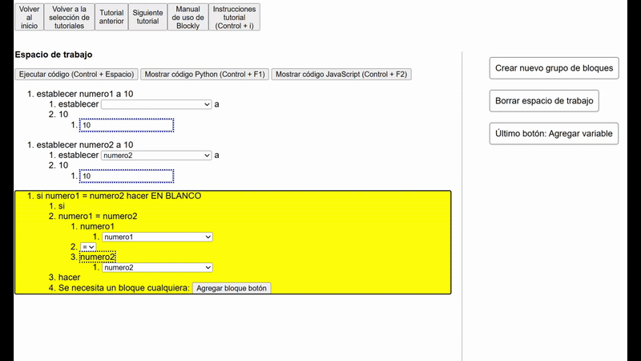
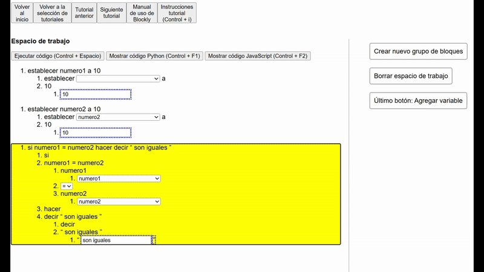

Tutorial 3.3: Tarea 3
¡Bienvenido al tutorial 3.3 de Accessible Blockly!
Esta es una nueva ventana del navegador, si quieres cambiar de ventana puedes presionar Alt + Tab, y si quieres cerrar esta ventana puedes presionar Control + W.
Recuerda que los pasos deben realizarse en la ventana anterior llamada "Tutorial Blockly", por lo que te recomendamos que tengas ambas ventanas
abiertas para que puedas seguir las instrucciones.
En el tutorial anterior aprendimos a crear variables y aumentar su valor.
En este tutorial realizarás una tarea para que puedas practicar lo aprendido, por lo que no te daremos instrucciones paso a paso, sino que te diremos qué debes hacer y tú debes realizarlo.
Sin embargo, si tienes dudas puedes pedir ayuda a la persona que te está guiando, ya que solamente habrán indicaciones visuales.
La tarea consiste en hacer un programa que diga "son iguales" si el valor de 2 variables es el mismo.
Pista: El orden de los bloques es importante, ya que el programa se ejecuta de arriba hacia abajo.
Guías visuales para la tarea:
      